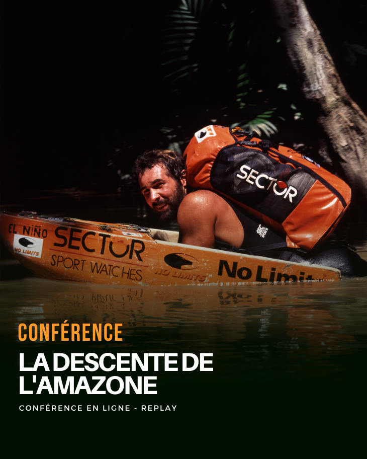
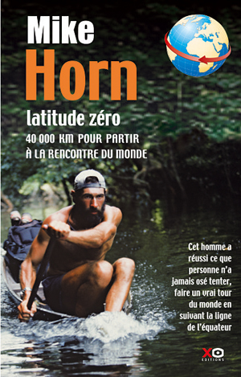
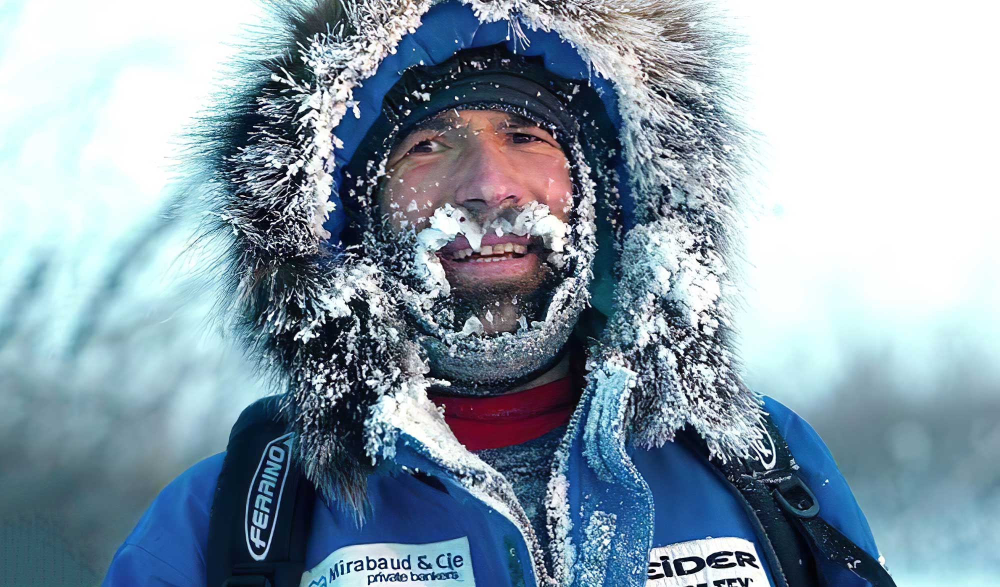
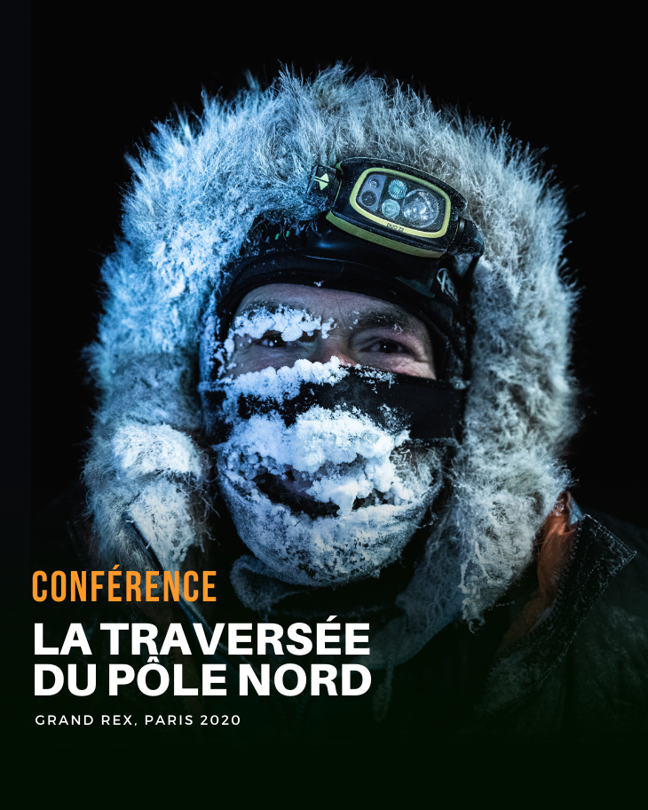
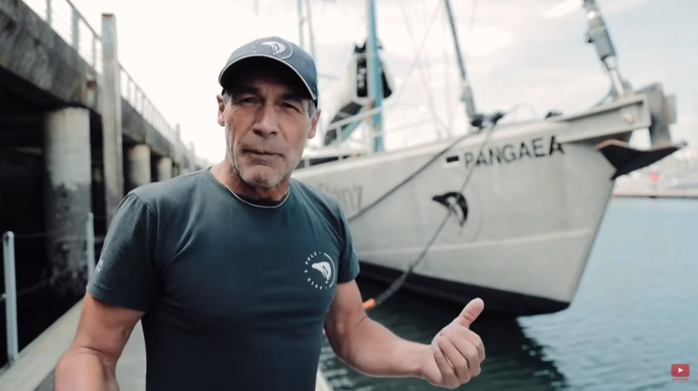
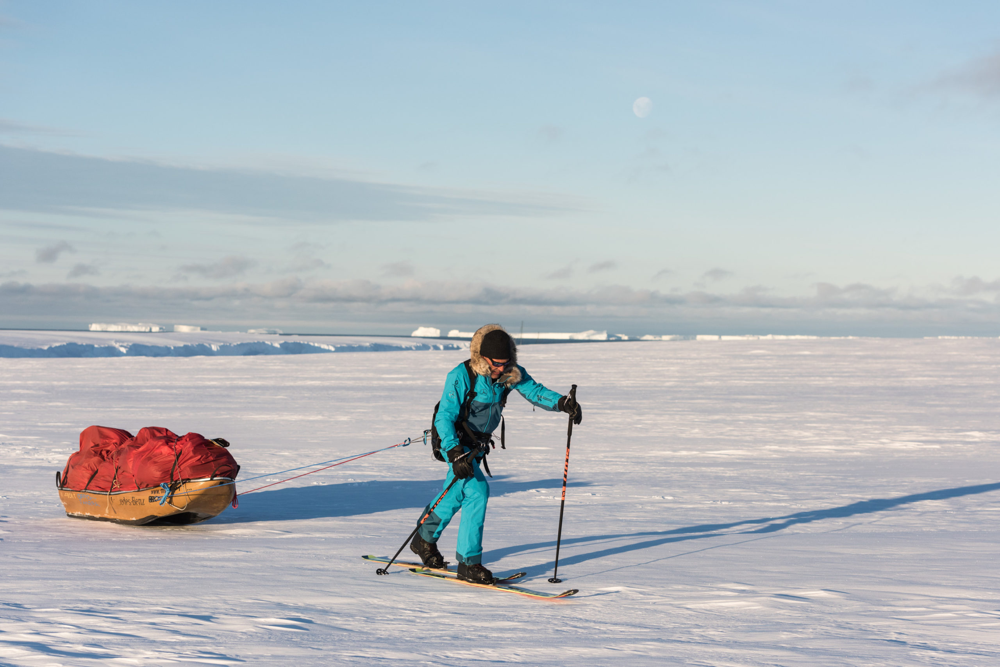
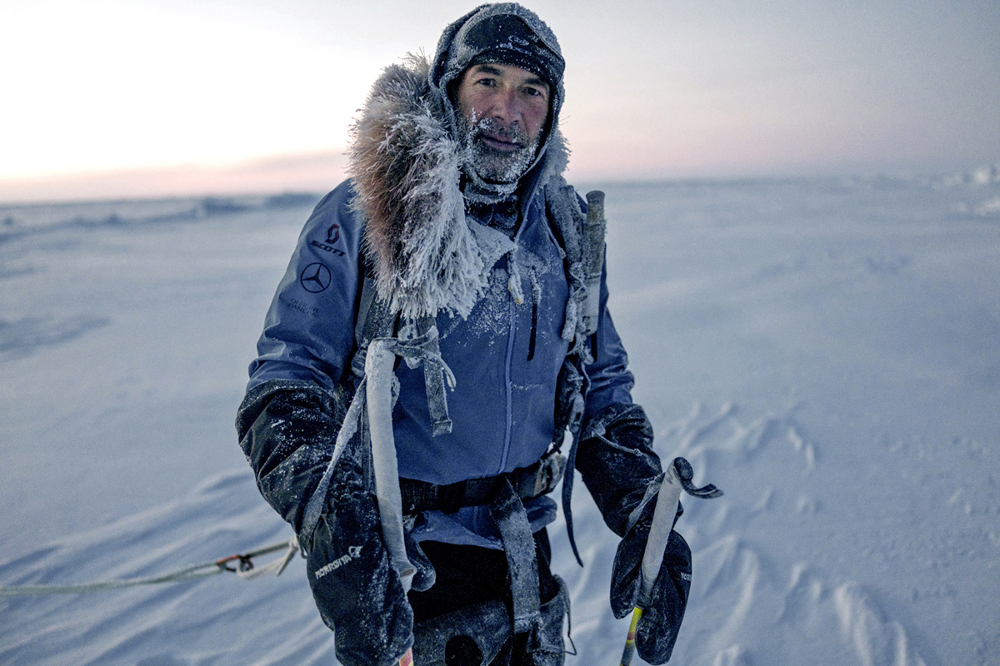
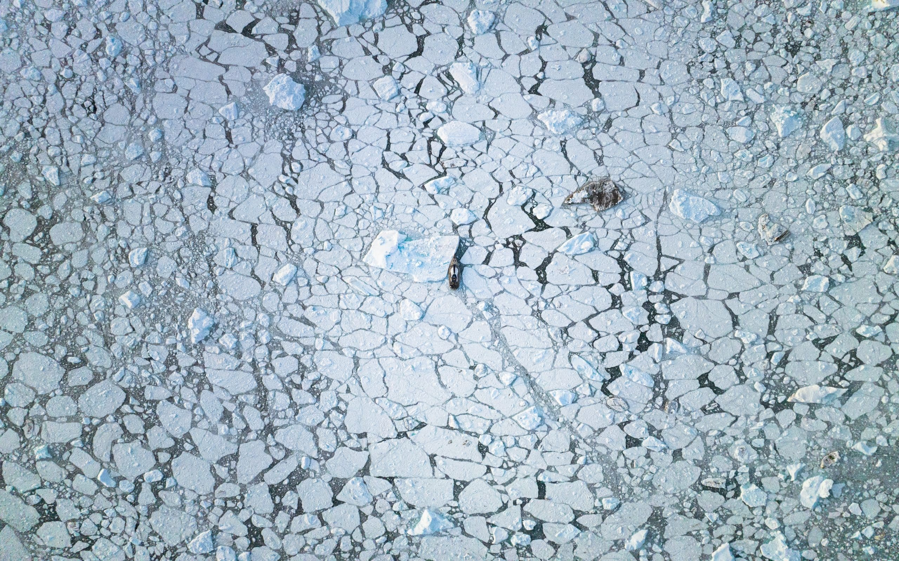

1997
La Descente de l'Amazonie

Mike Horn parcourt le fleuve Amazone dans des conditions extrêmes.
La Descente de l'Amazonie

Mike Horn parcourt le fleuve Amazone dans des conditions extrêmes.
Latitude 0

Tour du monde en suivant la ligne de l'équateur, sans moyen de transport motorisé.
Arktos

Expédition autour du cercle polaire arctique à travers des régions hostiles.
North Pole de Nuit

Atteinte du pôle Nord durant la nuit polaire.
Pangaea

Projet éducatif mondial visant à sensibiliser les jeunes à l'environnement.
Pole2Pole : Traversée de l'Antarctique

Expédition à travers l'un des environnements les plus extrêmes de la planète.
Pole2Pole : Traversée du Pôle Nord

Nouvelle étape du projet Pole2Pole.
What's Left

Exploration des derniers espaces sauvages préservés de la planète.